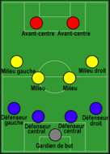
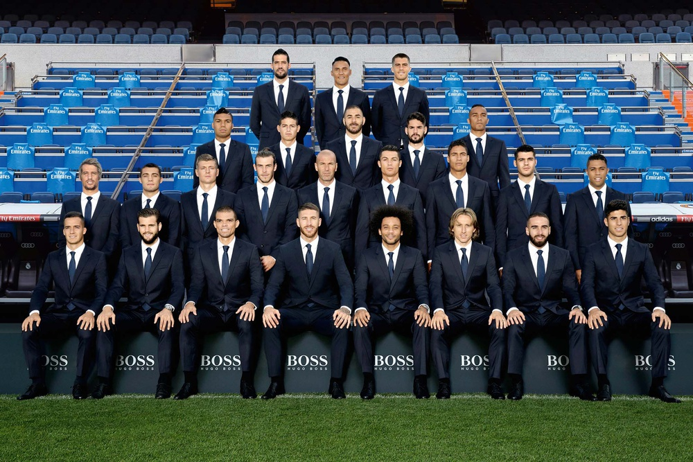
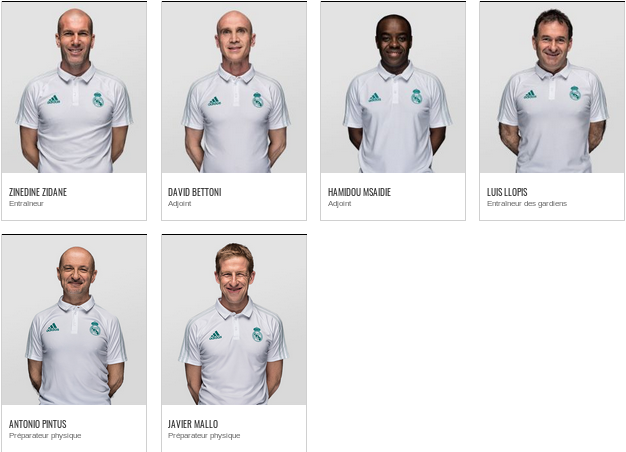

I : Effectif d'une équipe :
1 : Les joueurs :

Une équipe de football, comme beaucoup doivent le savoir, est composé de 11 joueurs sur le terrain
selon divers tactiques de jeu prévu au préalable par l'entraineur et les différents staffs techniques.
Chacune possédant un gardien et dix joueurs de champ.

2 : Le staff technique :
Le staff technique d'une equipe est composé, en régle général dans le côté sportif, d'un entraineur principal ainsi que
de deux adjoints qui l'aide dans ces tâches d'entrainement, de deux préparateurs sportifs et d'un entraineur des gardiens.

Ces deux précédentes catégories nous donne l'effectif de l'equipe.
Effectif du Real de Madrid pour l'année 2016/2017
3 : Les jeunes :
En dehors de l'effectif de l'effectif d'une équipe s'y ajoute la catégorie de jeunes de ce même club.
Ici est regroupé de la Castilla,
le centre de formation du Real de Madrid.
Ici sont les moins de 19 ans
du Real de Madrid.